Typography Documented
Forty seven roles in two families.
Open TypographyA component is one piece of the product with one owner: a single file in system/components holds its markup, its classes and every number in it, and every page that wears it wears those classes rather than a copy. Nothing inside is a literal: the colours, the steps, the radius and the timings come from the tokens, so moving a token moves every screen at once. Components come in three levels, and the grid is in that order: foundations are the values underneath, base components hold no other component inside them, composites are assembled out of base ones. Click a tile for the entry behind it, or open the page where a showcase has been written.
Window width right now: measuring. Every specimen on this page is the live organism at that width.
Forty seven roles in two families.
Open TypographyOne grey ladder, one accent blue, one error red.
Open ColorsThe glyph set the interface points with.
Open IconsColour, radius, elevation and spacing, raw.
Showcase pendingThe clock: durations and curves, named by journey.
Showcase pendingThe container ladder and the spacing scale.
Showcase pendingEvery action in the product, from one organism.
Open the cardA glyph in a circle, with no label beside it.
Open Icon buttonThe underlined text input and its caps label.
Open the cardThe label rides inside the control at rest.
Open the cardOne underlined row: country, hairline, number.
Open the cardSix cells for the code that arrives by mail.
Open the cardThe eye that shows what was typed.
Open the cardThe one small all caps label in the system.
Open the cardThe small blue count that rides on a glyph.
Open the cardThe one piece of gold left in the interface.
Showcase pendingThe circle a signed in visitor is known by.
Showcase pendingReady, built or expected, said in one word.
Showcase pendingExclusive choices in a row, underlined.
Showcase pendingThe furniture a showcase page is built from.
Showcase pendingNo component. The browser accent does the blue.
Needs a measurement firstNo component. Two groups run on the accent.
Needs a measurement firstNo component, and not one carrier anywhere.
Needs a decision firstNo component. The two on the checkout wear the field.
Showcase pendingNo component. Minus, number and plus are one.
Showcase pendingNo component. The checkout leans on title.
Showcase pendingNo component. Eleven live templates carry one.
Showcase pending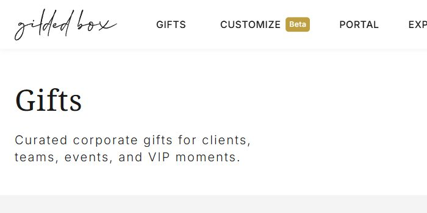
The 80px bar: lock, navigation, buttons, glyphs.
Showcase pending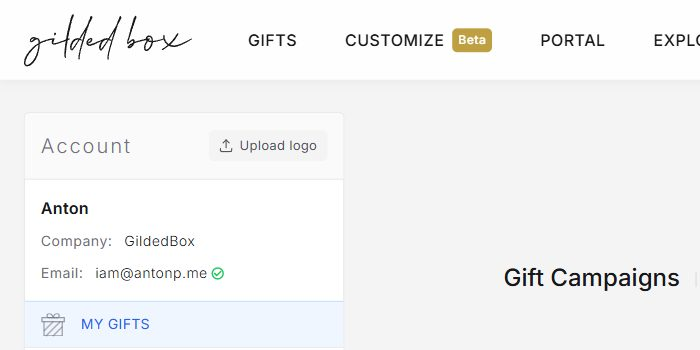
The header of the warehouse, with its own row.
Showcase pending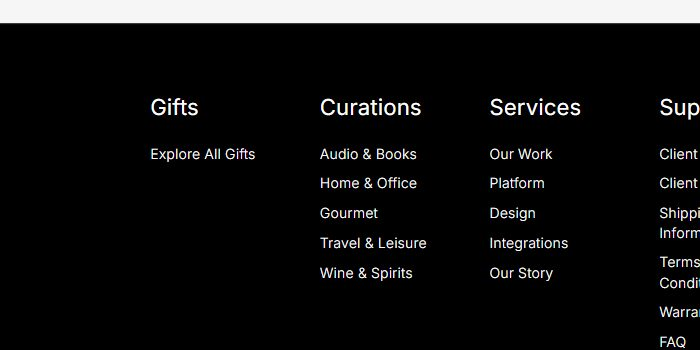
The full footer, folded into an accordion below 641.
Showcase pendingThe panel from the right, on one head.
Open Drawer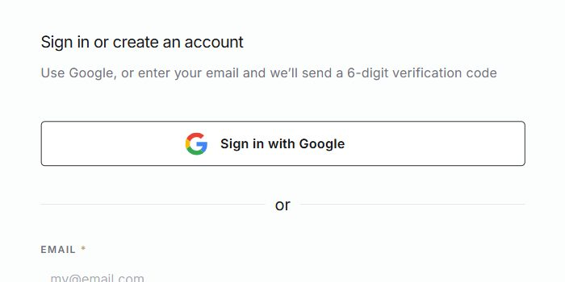
Google or mail, then a code, then done.
Showcase pending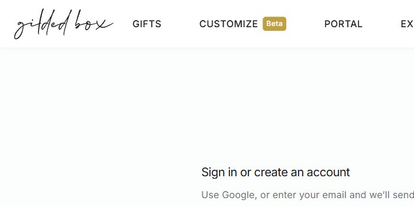
The slim bar over the sign in page.
Showcase pending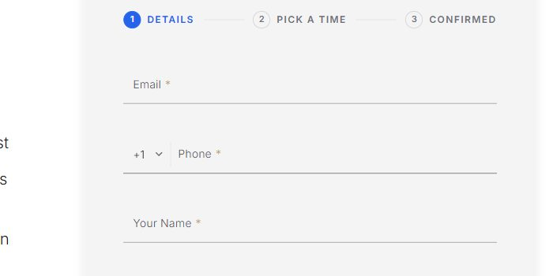
Three steps: the lead, the slot, the confirmation.
Showcase pending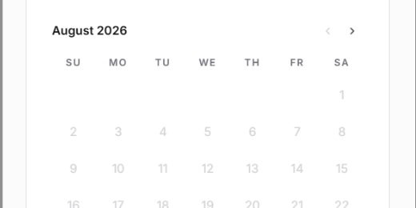
Month, arrows and a grid of days.
Showcase pending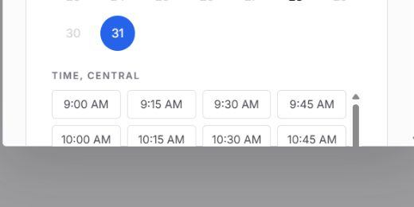
The chips of a chosen day, four rows tall.
Showcase pending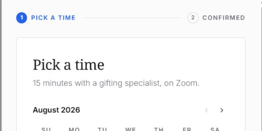
Dots and a rail that say where you are.
Showcase pendingSix bands of the home page, two of them travel.
Showcase pending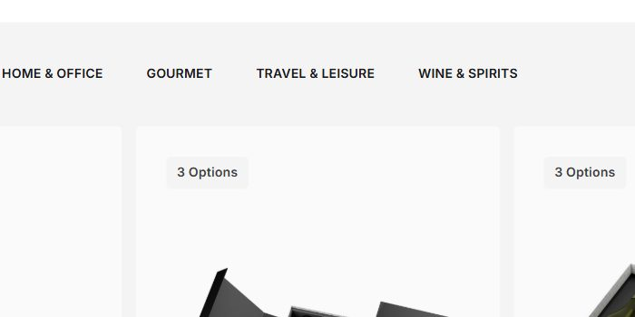
The three parts of a listing page.
Showcase pending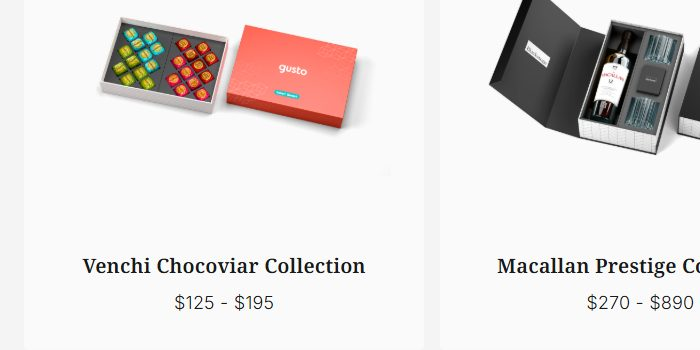
One gift in the grid: media, badge, title, price.
Showcase pending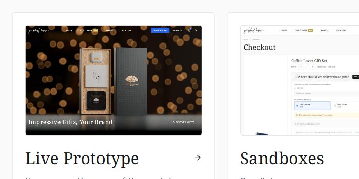
The card the studio itself is navigated by.
Showcase pending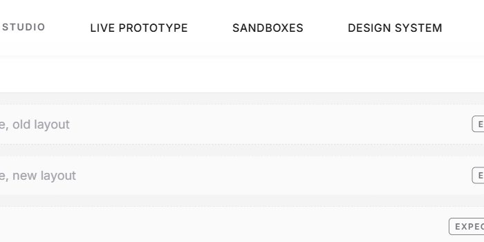
The map of the prototype, branch by branch.
Showcase pending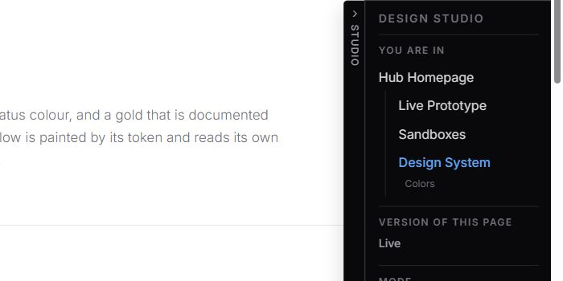
One console for the whole prototype.
Showcase pending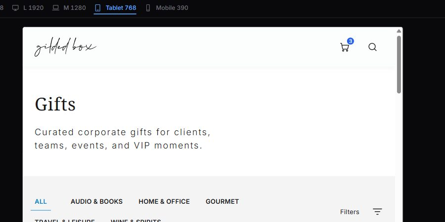
The page inside a screen of a chosen width.
Showcase pending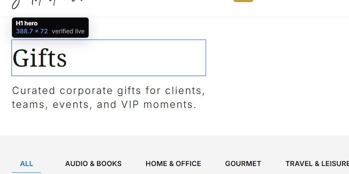
The name plate, the padding and the margin.
Showcase pending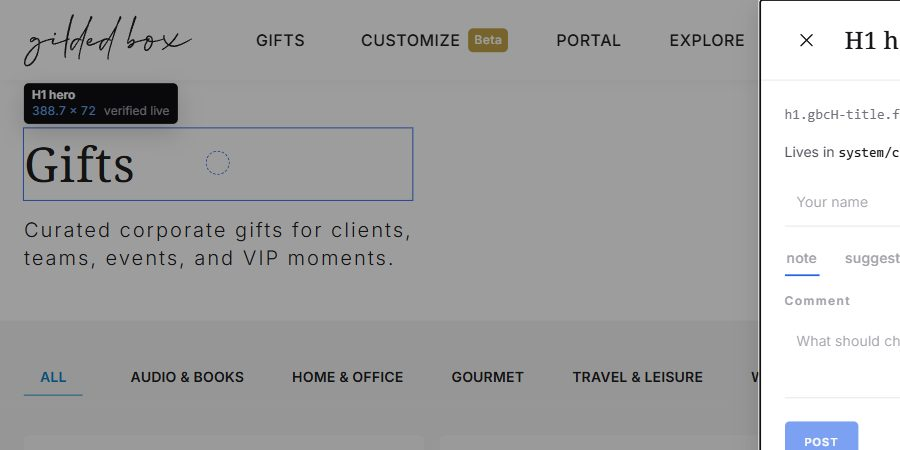
A remark belongs to a thing, so it sits on it.
Showcase pendingNo component. The import dialog is drawn by hand.
Showcase pendingNo component. Thirteen live templates carry one.
Showcase pendingThe footer has one, scoped to itself.
Showcase pendingNo component. The recipients table is by hand.
Showcase pendingNo component, and live has none either.
Showcase pendingNo component. The catalog borrows the bundle one.
Showcase pendingNo component. The catalog borrows one.
Showcase pendingNo component, and 112 live pages are one.
Showcase pendingNo component: no carousel and no stack.
Showcase pendingA tile with a component in it is that component, drawn by the system on this page: break the organism and the tile breaks with it. A tile with a page in it is a snapshot taken with the instrument on 28 August, because half of the composite list is a state rather than a resting surface, and a snapshot goes stale when the page moves. An empty dashed tile means there is nothing to show yet. Click a tile for the level, the owner, the pages it stands on and the whole entry.